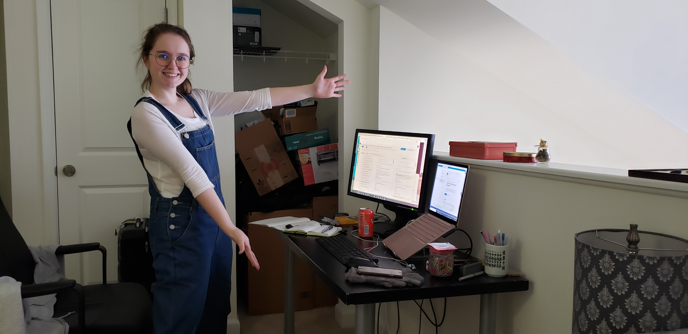

~ About Me ~
I'm Emily. I graduated UMBC class of 2020 with a degree in computer science and a minor in creative writing. During my four years there, I interned at NIST and Google, worked for the career center and as a TA, and conducted my own research. After graduation, I started a job at Microsoft, where I work now! I'm currently on the devices and drivers team, meaning I work with low level hardware-software interactions. Some of my other work interests include web-based virtual reality and machine learning for code generation. Feel free to reach out to me at hobbyemily@gmail.com or add me on Linkedin.
I started this website because I wanted to leave behind a blueprint for CS majors at UMBC who want to compete in the big leagues. We're not the most prestegious name in computer science, but the program can prepare you for a stellar career if you put in the time and effort.
